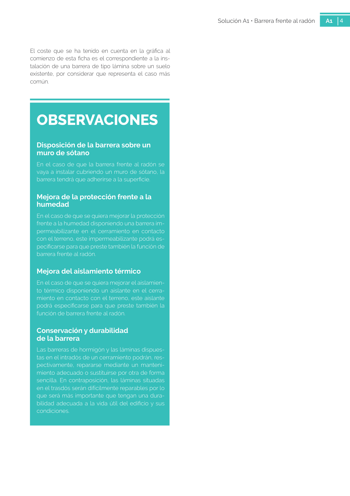

<!doctype html>
<html lang="es"><head><meta charset="utf-8">
<meta name="viewport" content="width=device-width, initial-scale=1">
<title>GUIA · Página física 30</title><link rel="stylesheet" href="../estilo.css">
</head><body>
<nav><a href="../index.html">Índice</a> › <a href="../doc/guia-pdf-f3314b0414fe-sin-fecha-e58e54b822cf.html">GUIA</a></nav>

<h1>GUIA · Página física 30</h1>
<header class="meta"><p><strong>Guia de rehabilitacion frente al radon Fichas</strong> · edición sin-fecha · capa guia</p>
<p>Documento <code>GUIA-PDF-f3314b0414fe</code> · SHA-256 del PDF <code>e58e54b822cf4ab00e258f0eb50c0f06a8c04e3730a7f530d224485e2a5bb02e</code></p>
<p>Página física 30 de 82.</p>
<p><a href="../../contenido/docs/GUIA-PDF-f3314b0414fe/sin-fecha__e58e54b822cf/fuente.pdf#page=30">Copia fiel del PDF fuente</a> · <a href="https://www.codigotecnico.org/pdf/GuiasyOtros/GuiaRadon/Guia_de_rehabilitacion_frente_al_radon+Fichas.pdf">Fuente oficial</a></p>
<p><a href="https://www.codigotecnico.org/Guias/GuiaRadon.html">Ficha de la disposición en la fuente oficial</a></p>
<div class="cita"><p><a href="../../contenido/docs/GUIA-PDF-f3314b0414fe/sin-fecha__e58e54b822cf/fuente.pdf#page=2">Créditos y autoría en el PDF fuente</a>. Reproducción con cita de fuente y autores.</p>
<p>Permiso literal: Se permite la reproducción total o parcial del contenido de este nible en el momento de su publicación. No se aceptará por las institu­ documento siempre y cuando se cite la fuente original</p>
<details><summary>Leer los créditos completos y la autoría</summary><pre class="literal">Este documento ha sido elaborado por el Instituto de ciencias
de la construcción Eduardo Torroja (IETcc) bajo la supervisión
de la Dirección General de Agenda Urbana y Arquitectura del
Ministerio de Transportes, Movilidad y Agenda Urbana (MITMA).

El IETcc, perteneciente al Consejo Superior de Investigaciones
Científicas (CSIC), es el centro de investigación en edificación
de referencia en España. La Unidad de Calidad en la Construc­
ción del IETcc asesora al MITMA en la elaboración del Código
Técnico de la Edificación que, desde el año 2019, cuenta con la
sección HS6 Protección frente a la exposición al radón.

Dirección y Coordinación:
Ministerio de Transportes, Movilidad y Agenda Urbana
 Isabel Marcos Anasagasti
 Raquel Lara Campos
 Eduardo González de Prado
Instituto de ciencias de la construcción Eduardo Torroja CSIC
 Pilar Linares Alemparte

Autoras:
 Pilar Linares Alemparte
 Sonia García Ortega

Colaboradoras:
 Virginia Sánchez Ramos
 Karina Angélica García Pardo

Edita:
 Centro de Publicaciones Secretaría General Técnica
 Ministerio de Transportes, Movilidad y Agenda Urbana©

Entidad colaboradora:
 Consejo Superior de Investigaciones Científicas · CSIC
 Ministerio de Ciencia e Innovación

    Catálogo de publicaciones de la Administración General
    del Estado: publicacionesoficiales.boe.es

    Centro virtual de publicaciones del Ministerio de Transpor­
     tes, Movilidad y Agenda Urbana: www.mitma.gob.es

    Página web del Código Técnico de la Edificación:

                                                                                                                                                                              SECRETARÍA                                                                                                                                                                     GENERAL                                                                                                                                                                         DE    www.codigotecnico.org                                                                                                                                              AGENDA URBANA                                                                                                                                                                           Y VIVIENDA                                                                                                                                                 MINISTERIO                                                                                                           GOBIERNO                                                                                                                           DE                                                                                                                                           TRANSPORTES,                                                                                                                                                 MOVILIDAD                                                                                                             DE ESPAÑA                                                                                                                               Y AGENDA                                                                                                                           URBANA                                                                                                                                                               DIRECCIÓN                                                                                                                                                                     GENERAL                                                                                                                                                                         DE
Maquetación y diseño gráfico:                                                                                                     AGENDA URBANAY ARQUITECTURA
 Lapizmente. Estrategia • Diseño Gráfico


                                                                                                                                             CIENCIAFotografía portada:                                                                                GOBIERNODE ESPAÑA      MINISTERIODEE INNOVACIÓN
 Sonia García Ortega

Los contenidos o ideas recogidas en este documento pertenecen a
sus autores. Este documento está basado en el conocimiento dispo­     Se permite la reproducción total o parcial del contenido de este
nible en el momento de su publicación. No se aceptará por las institu­     documento siempre y cuando se cite la fuente original y a sus
ciones ni los autores implicados responsabilidad de ningún tipo por el                                                                    autores.
uso de estas recomendaciones. Las figuras tienen carácter ilustrativo
y no deben interpretarse como detalles constructivos.</pre></details></div>
<div class="aviso"><strong>Alcance y límites</strong><ul><li>Extracción automática sin revisión técnica humana completa. Contraste tablas, fórmulas, notas y excepciones con el PDF. La edición disponible no determina la vigencia ni la aplicabilidad a un proyecto.</li><li>Guia o documento divulgativo; no es texto normativo.</li><li>Extracción automática; el cotejo humano está pendiente.</li><li>Semántica y tablas no equivalen a validación exhaustiva.</li></ul></div></header>
<nav><a href="guia-pdf-f3314b0414fe-sin-fecha-e58e54b822cf__p0029.html">← Página 29</a> · <a href="guia-pdf-f3314b0414fe-sin-fecha-e58e54b822cf__p0031.html">Página 31 →</a></nav>
<p>Formato: <a href="../../contenido/docs/GUIA-PDF-f3314b0414fe/sin-fecha__e58e54b822cf/pagina/p0030.md">Texto de la página (Markdown)</a></p>
<p><a href="../../contenido/docs/GUIA-PDF-f3314b0414fe/sin-fecha__e58e54b822cf/bloque/p0030.json">JSON de bloques</a></p>
<pre class="literal">4
Solución A1 • Barrera frente al radón
A1
4
OBSERVACIONES
Disposición de la barrera sobre un 
muro de sótano
En el caso de que la barrera frente al radón se 
vaya a instalar cubriendo un muro de sótano, la 
barrera tendrá que adherirse a la superficie.
Mejora de la protección frente a la 
humedad
En el caso de que se quiera mejorar la protección 
frente a la humedad disponiendo una barrera im­
permeabilizante en el cerramiento en contacto 
con el terreno, este impermeabilizante podrá es­
pecificarse para que preste también la función de 
barrera frente al radón.
Mejora del aislamiento térmico
En el caso de que se quiera mejorar el aislamien­
to térmico disponiendo un aislante en el cerra­
miento en contacto con el terreno, este aislante 
podrá especificarse para que preste también la 
función de barrera frente al radón.
Conservación y durabilidad
de la barrera
Las barreras de hormigón y las láminas dispues­
tas en el intradós de un cerramiento podrán, res­
pectivamente, repararse mediante un manteni­
miento adecuado o sustituirse por otra de forma 
sencilla. En contraposición, las láminas situadas 
en el trasdós serán difícilmente reparables por lo 
que será más importante que tengan una dura­
bilidad adecuada a la vida útil del edificio y sus 
condiciones.
El coste que se ha tenido en cuenta en la gráfica al 
comienzo de esta ficha es el correspondiente a la ins­
talación de una barrera de tipo lámina sobre un suelo 
existente, por considerar que representa el caso más 
común.
</pre>
<figure><a href="../../contenido/docs/GUIA-PDF-f3314b0414fe/sin-fecha__e58e54b822cf/figura/p0030.png"></a><figcaption>Página visual 30, para contrastar fórmulas, tablas y figuras.</figcaption></figure>
<h2>Segmentos que incluyen esta página</h2><ul>
<li><a href="../apartado/guia-pdf-f3314b0414fe-sin-fecha-e58e54b822cf__a0074.html">a0074 · 5 	 encuentro con pilar 6 	 encuentro con fachada</a></li>
<li><a href="../apartado/guia-pdf-f3314b0414fe-sin-fecha-e58e54b822cf__a0075.html">a0075 · 5 	 encuentro con pilar 6 	 encuentro con fachada / OBSERVACIONES Disposición de la barrera sobre un</a></li>
<li><a href="../apartado/guia-pdf-f3314b0414fe-sin-fecha-e58e54b822cf__a0076.html">a0076 · 5 	 encuentro con pilar 6 	 encuentro con fachada / muro de sótano</a></li>
<li><a href="../apartado/guia-pdf-f3314b0414fe-sin-fecha-e58e54b822cf__a0077.html">a0077 · 5 	 encuentro con pilar 6 	 encuentro con fachada / Mejora de la protección frente a la humedad</a></li>
<li><a href="../apartado/guia-pdf-f3314b0414fe-sin-fecha-e58e54b822cf__a0078.html">a0078 · 5 	 encuentro con pilar 6 	 encuentro con fachada / Mejora del aislamiento térmico</a></li>
<li><a href="../apartado/guia-pdf-f3314b0414fe-sin-fecha-e58e54b822cf__a0079.html">a0079 · 5 	 encuentro con pilar 6 	 encuentro con fachada / Conservación y durabilidad de la barrera</a></li>
</ul>
<footer>Generado estáticamente desde el corpus normalizado; sin JavaScript ni servicios externos. El HTML es una vista reproducible; conserve la fuente y la edición al citar.</footer>
</body></html>
